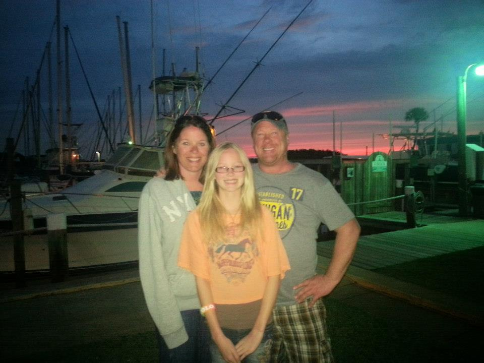
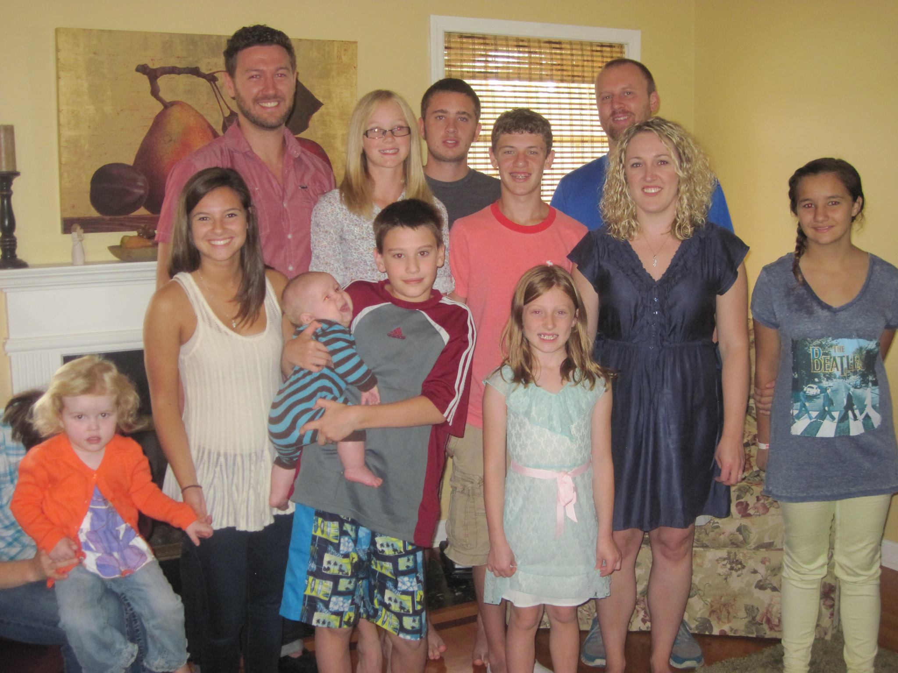
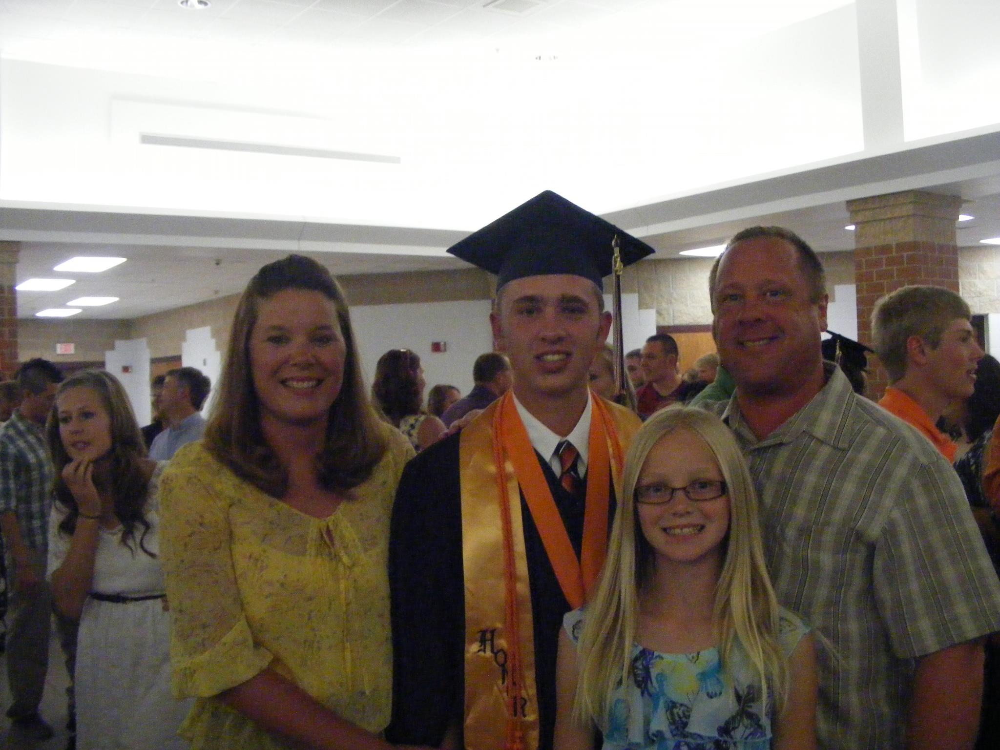
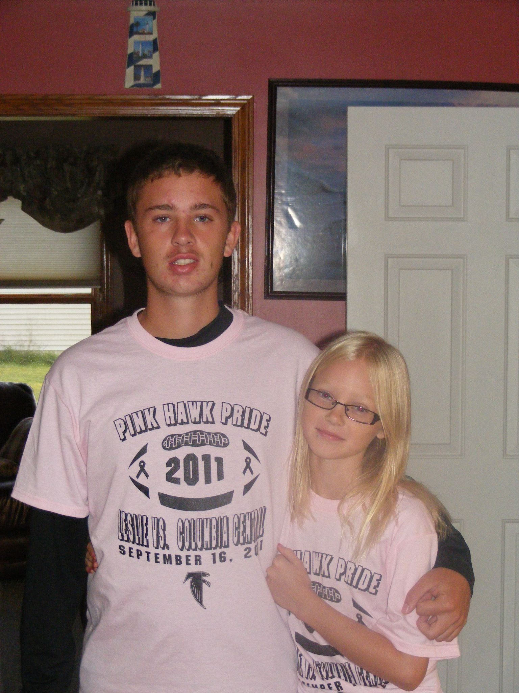
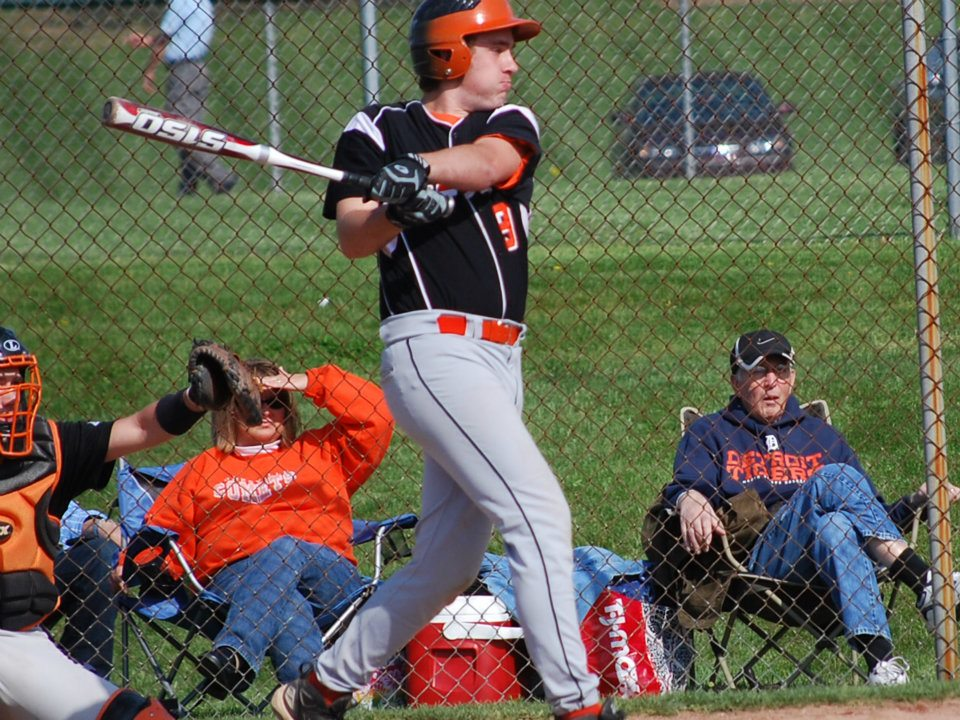
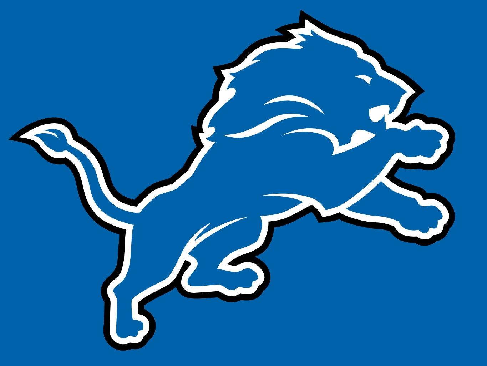

About Me
- Family
- Sports
- Hobbies
- Involvement
Family
My family consists of myself, my parents and my younger sister. We also have quite a large extended family, as I have a grandparent on both sides who was one of nearly 10 children.
  

Sports
Growing up in a small town, there wasn't much to do other than sports. I ended up finding myself playing Baseball, Basketball, and Soccer while growing up. Some of those sports I'm still involved with through IMs at school, but I have mostly been relegated to just watching. I actively follow the Detroit Tigers and Detroit Lions as well as any European Soccer matches that I can find.
 
Hobbies
My hobbies primarily consist of video games, Netflix and any IM sports that I can find. I use them as a way to destress, so I don't usually look for hobbies that are too intensive. I also like to just sit down and watch sports when I can. Typically, the Detroit Tigers are my go to.


Involvement
My involvement up at school is my involvement within my fraternity. I am currently our VP of Academic Excellence and was recently elected as the new president for the next semester. I joined as a second year student and have spent a lot of time trying to improve myself and the organization.